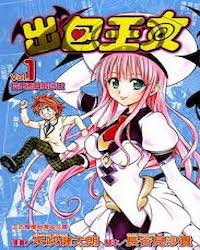

出包王女 第二季
电视动画《更多 出包王女》改编自漫画《出包王女》，是电视动画《出包王女》的第2期作品。
超级纯情的男高中生“结城梨斗”一直暗恋着“西连寺春菜”，虽然春菜心里也早已对梨斗有意思，但双方却完全不知道对方的心意。在梨斗终于下定决心向春菜表白时，一连串的Trouble（出包）让他告白成功的对象变成突然从天而降的外星美少女“菈菈”。
和菈菈相遇之后，梨斗连锁性的被卷入各种麻烦。故事就围绕在梨斗、菈菈和春菜的三角关系，以及和“金色暗影”及“古手川唯”等少女的相遇与交流展开。梨斗状况不断又带点情色的日常生活就这样呈现在读者面前。